t = 0.3; t0=0; t1=1; nt = 100; % Number of intervals tvec = linspace(t0,t1,nt+1); dt = tvec(2)-tvec(1); if( t<t0 || t>t1) t = 0.3; end x0=0; x1=1; nx = 100; % Number of intervals xvec = linspace(x0,x1,nx+1); dx = xvec(2)-xvec(1); [tmesh,xmesh] = meshgrid(tvec,xvec); tdirs = ones(size(tmesh)); xdirs = f( tmesh, xmesh); smesh = sqrt(tdirs.^2+xdirs.^2); % Scaling factors set(gca,'fontname','times'); set(gca,'ydir','reverse'); set(gca,'yticklabel',flipud(get(gca,'yticklabel'))); axis image; axis([ t0 t1 x0 x1]); set(gca,'activepositionproperty','position'); hold on; title('RK4'); xlabel('{\it t}'); ylabel('{\it x}'); markersize = 14;
Grid.
for i=t0:dt:t1 hnd = line( i*[ 1 1], [ x0 x1]); set(hnd, 'color',0.9*[ 1 1 1]); end for i=x0:dx:x1 hnd = line( [ t0 t1], i*[ 1 1]); set(hnd, 'color',0.9*[ 1 1 1]); end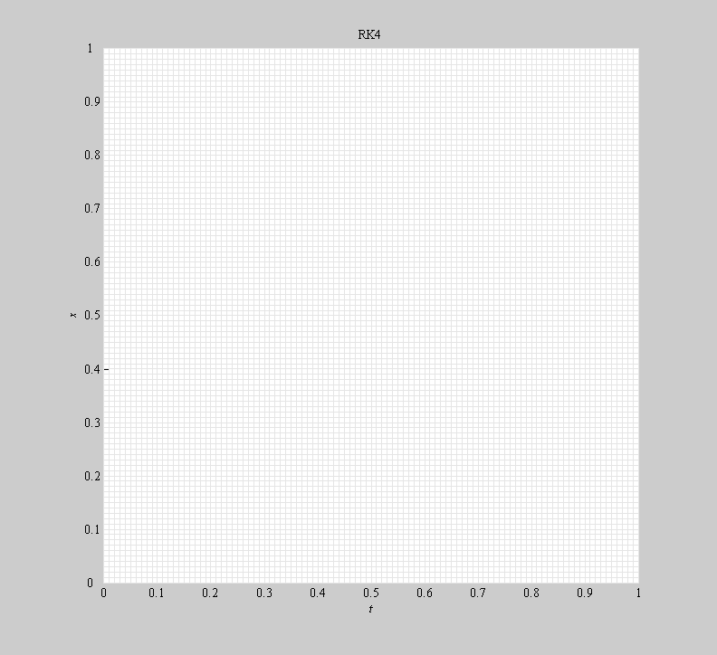
Direction field. (May not show up very well at this zoom level, but we will zoom in soon.)
colormap(gray); hnd=quiver(tmesh,xmesh,tdirs./smesh,xdirs./smesh,1/3); set(hnd,'showarrowhead','off'); set(hnd,'color',0.8*[ 1 1 1]); hnd=quiver(tmesh,xmesh,-tdirs./smesh,-xdirs./smesh,1/3); set(hnd,'showarrowhead','off'); set(hnd,'color',0.8*[ 1 1 1]);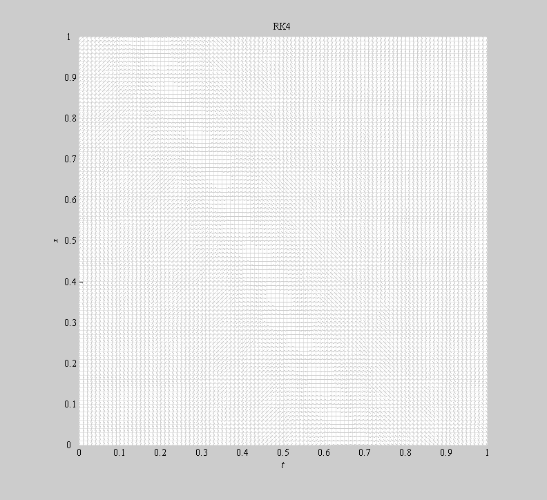
Exact solution from t0 to t1 with initial condition (0,0).
hnd=plot( tvec, xsoln(tvec)); set(hnd,'color',0.5*[ 1 1 1]); ti1 = t*nt/t1+1; % Where/when to start the step. h = 10*dt; % Absurdly large step size for illustration. ti2 = (t+h)*nt/t1+1; % Where/when to start the step. x = xsoln(t); x2 = xsoln(t+h); m1 = f(t , x); m2 = f(t+.5*h, x+.5*h*m1); m3 = f(t+.5*h, x+.5*h*m2); m4 = f(t+ h, x+ h*m3);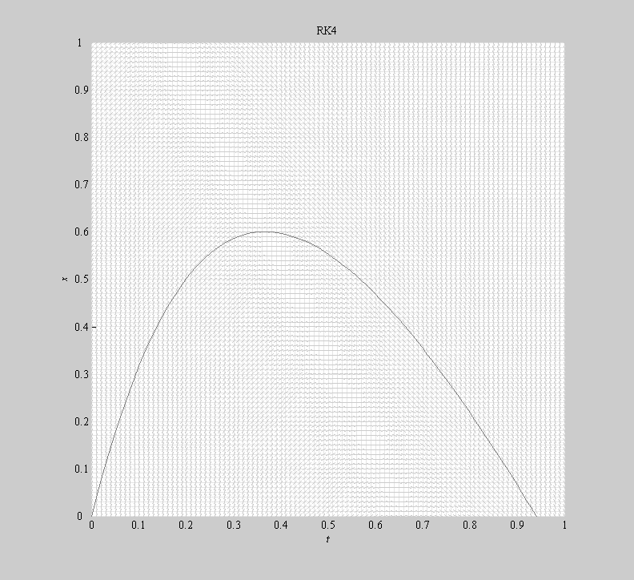
Darken solution over range of the step and mark starting and ending points.
trange = [ti1:ti2]; hnd=plot( tvec(trange), xsoln(tvec(trange))); set(hnd,'linewidth',2); set(hnd,'color',0.5*[ 1 1 1]); hnd = plot( t, x, '.'); set(hnd,'markersize',markersize); set(hnd,'color',0.5*[ 1 1 1]); hnd = plot( t+h, xsoln(t+h), '.'); set(hnd,'markersize',markersize); set(hnd,'color',0.5*[ 1 1 1]);
Zoom in
axis([ t-.5*h t+h+.5*h xsoln(t+h)-.5*h xsoln(t)+.5*h]);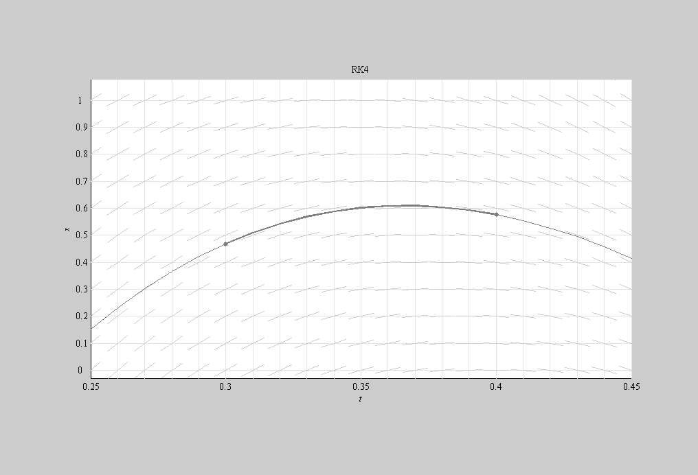
Mark slope m1.
hnd=line( [ t-.1*h t+.1*h], [ x-.1*h*m1 x+.1*h*m1]); set(hnd,'color',1.0*[ 0 0 1] + .0*[ 1 1 0]); hnd=plot( t, x, '.'); set(hnd,'color',1.0*[ 0 0 1] + .0*[ 1 1 0]); hnd=text( t, x, '{\it m}_1'); set(hnd,'color',1.0*[ 0 0 1] + .5*[ 1 1 0]); set(hnd,'horizontalalignment','center') set(hnd,'verticalalignment','top') set(hnd,'fontname','times')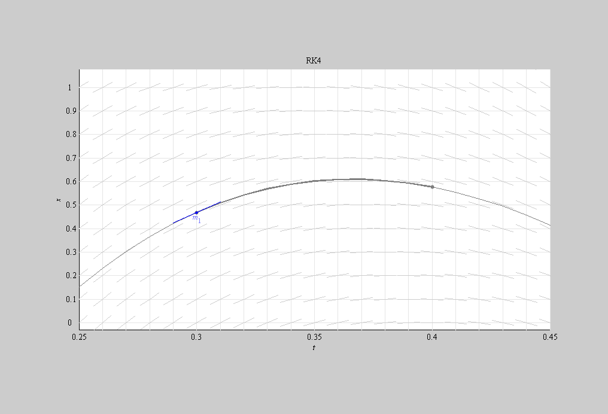
Line with slope m1 through point (t,x)
hnd=line( [ t-100*h t+100*h], [ x-100*h*m1 x+100*h*m1]); set(hnd,'color',1.0*[ 0 0 1] + .5*[ 1 1 0]); set(hnd,'linestyle','--');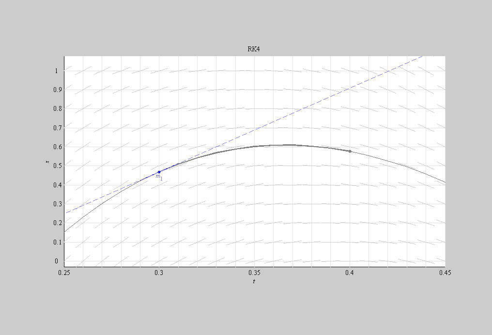
Mark slope m2.
hnd=line( [ t+.5*h-.1*h t+.5*h+.1*h], [ x+.5*h*m1-.1*h*m2 x+.5*h*m1+.1*h*m2]); set(hnd,'color',1.0*[ 1 0 1] + .0*[ 0 1 0]); hnd=plot( t+.5*h, x+.5*h*m1, '.'); set(hnd,'color',1.0*[ 1 0 1] + .0*[ 0 1 0]); hnd=text( t+.5*h, x+.5*h*m1, '{\it m}_2'); set(hnd,'color',1.0*[ 1 0 1] + .5*[ 0 1 0]); set(hnd,'horizontalalignment','right') set(hnd,'verticalalignment','bottom') set(hnd,'fontname','times')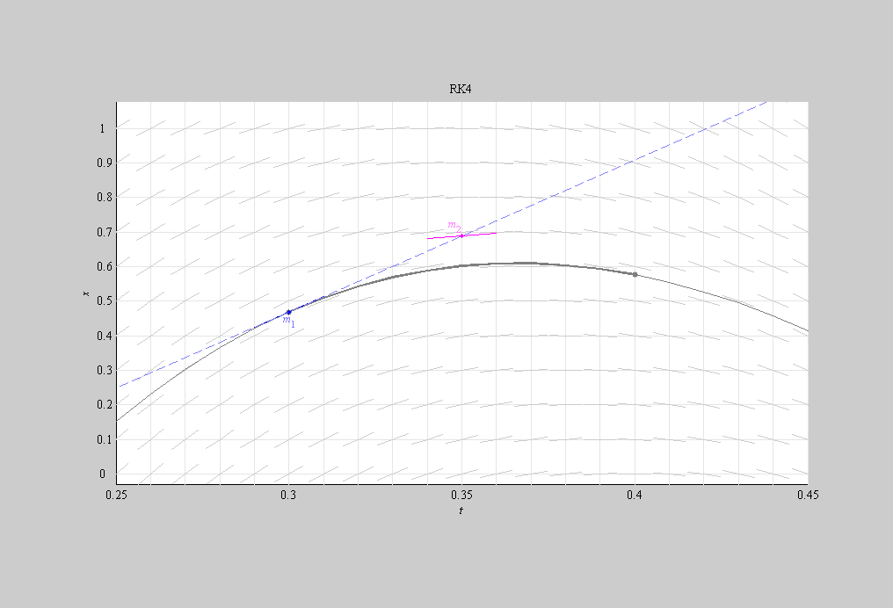
Line with slope m2 through point (t,x)
hnd=line( [ t-100*h t+100*h], [ x-100*h*m2 x+100*h*m2]); set(hnd,'color',1.0*[ 1 0 1] + .5*[ 0 1 0]); set(hnd,'linestyle','--');
Mark slope m3.
hnd=line( [ t+.5*h-.1*h t+.5*h+.1*h], [ x+.5*h*m2-.1*h*m3 x+.5*h*m2+.1*h*m3]); set(hnd,'color',0.7*[ 0 1 0] + .0*[ 1 0 1]); hnd=plot( t+.5*h, x+.5*h*m2, '.'); set(hnd,'color',0.7*[ 0 1 0] + .0*[ 1 0 1]); hnd=text( t+.5*h, x+.5*h*m2, '{\it m}_3'); set(hnd,'color',0.7*[ 0 1 0] + .5*[ 1 0 1]); set(hnd,'horizontalalignment','center') set(hnd,'verticalalignment','top') set(hnd,'fontname','times')
Line with slope m3 through point (t,x)
hnd=line( [ t-100*h t+100*h], [ x-100*h*m3 x+100*h*m3]); set(hnd,'color',0.7*[ 0 1 0] + .5*[ 1 0 1]); set(hnd,'linestyle','--');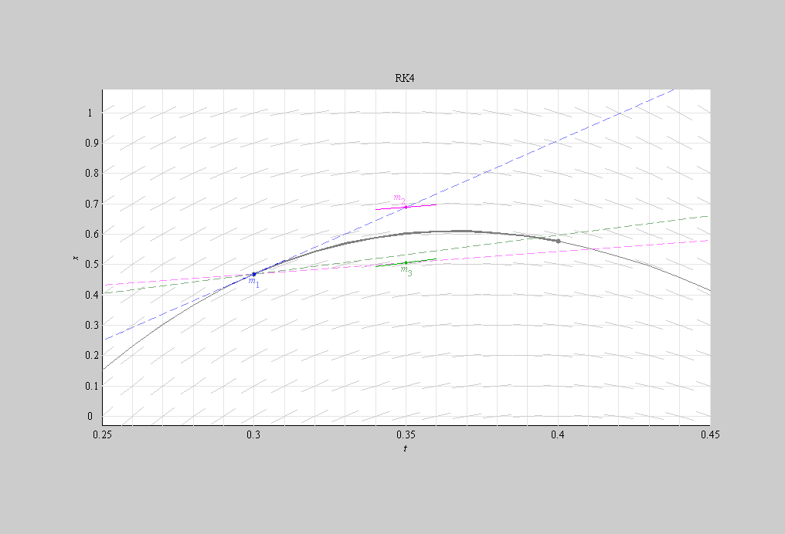
Mark slope m4.
hnd=line( [ t+h-.1*h t+h+.1*h], [ x+h*m3-.1*h*m4 x+h*m3+.1*h*m4]); set(hnd,'color',1.0*[ 1 .7 0] + .0*[ 0 0 1]); hnd=plot( t+h, x+h*m3, '.'); set(hnd,'color',1.0*[ 1 .7 0] + .0*[ 0 0 1]); hnd=text( t+h, x+h*m3, '{\it m}_4'); set(hnd,'color',1.0*[ 1 .7 0] + .5*[ 0 0 1]); set(hnd,'horizontalalignment','center') set(hnd,'verticalalignment','bottom') set(hnd,'fontname','times')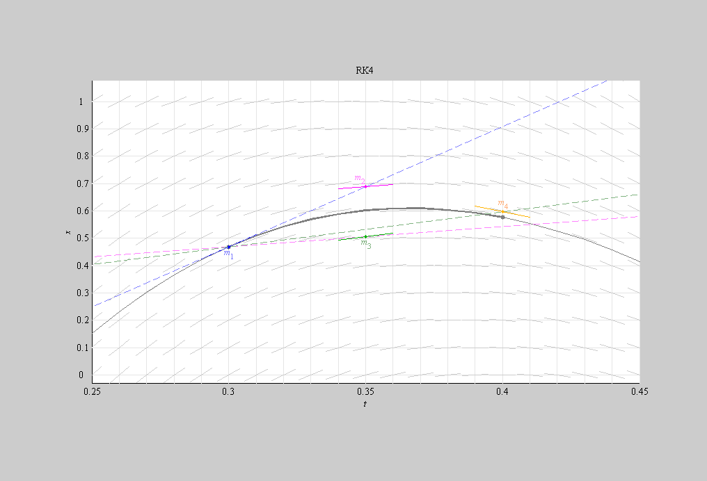
Line with slope m4 through point (t,x)
hnd=line( [ t-100*h t+100*h], [ x-100*h*m4 x+100*h*m4]); set(hnd,'color',1.0*[ 1 .7 0] + .5*[ 0 0 1]); set(hnd,'linestyle','--');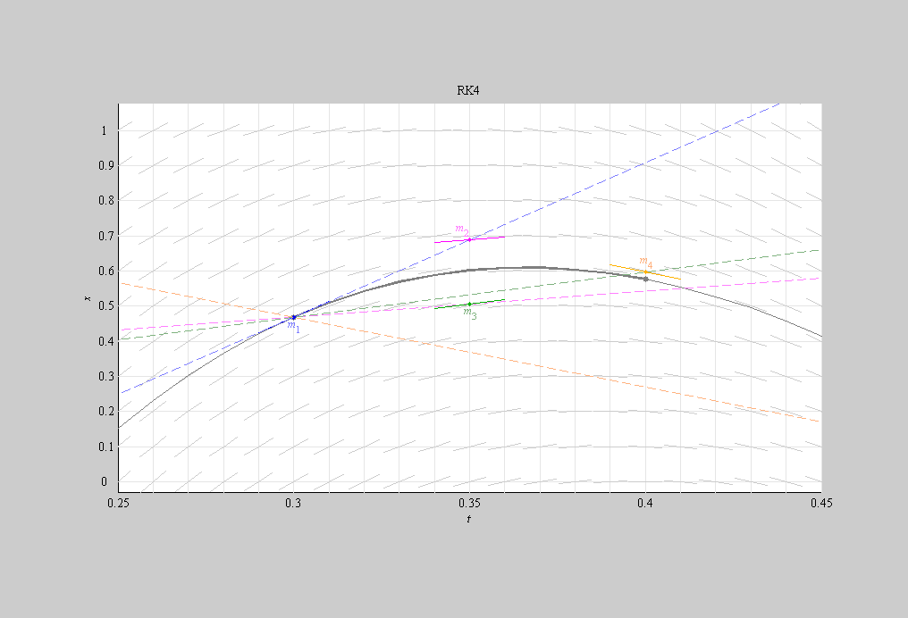
RK4 segment
hnd=line( [ t t+h], [ x x+h*(m1+2*m2+2*m3+m4)/6]); set(hnd,'linewidth',2); set(hnd,'color',[ 1 0 0]); hnd=line( [ t-100*h t+100*h], [ x-100*h*(m1+2*m2+2*m3+m4)/6 x+100*h*(m1+2*m2+2*m3+m4)/6]); set(hnd,'color',[ 1 0 0]); set(hnd,'linestyle','--'); % Mark starting point of step. hnd = plot( t, x, '.'); set(hnd,'markersize',markersize); set(hnd,'color',[ 1 0 0]); % Mark ending point of RK4 segment. hnd = plot( t+h, x+h*(m1+2*m2+2*m3+m4)/6, '.'); set(hnd,'markersize',markersize); set(hnd,'color',[ 1 0 0]);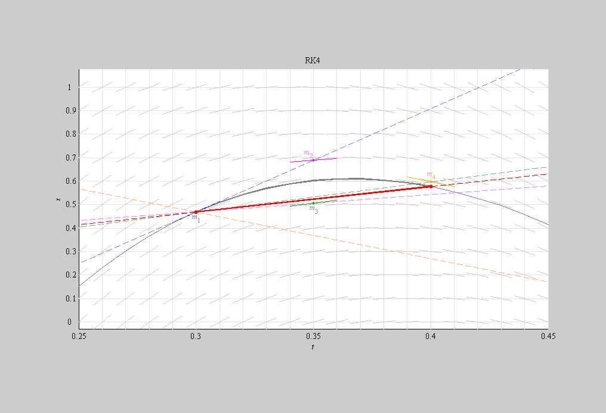
Draw remaining steps of RK4 for reference.
temp = t; x = xsoln(t); m1 = f(t , x); m2 = f(t+.5*h, x+.5*h*m1); m3 = f(t+.5*h, x+.5*h*m2); m4 = f(t+ h, x+ h*m3); while t < 1-2*h t = t + h; x = x+h*(m1+2*m2+2*m3+m4)/6; %m1 = xdirs(1,round(t*nt/t1)+1); %m2 = xdirs(1,round((t+.5*h)*nt/t1)+1); %m3 = xdirs(1,round((t+.5*h)*nt/t1)+1); %m4 = xdirs(1,round((t+h)*nt/t1)+1); m1 = f(t , x); m2 = f(t+.5*h, x+.5*h*m1); m3 = f(t+.5*h, x+.5*h*m2); m4 = f(t+ h, x+ h*m3); hnd = line( [ t t+h], [ x x+h*(m1+2*m2+2*m3+m4)/6]); set(hnd,'color', [ 1 0 0] + .5*[ 0 1 1]); end t = temp; x = xsoln(t); m1 = xdirs(1,ti1); while t > 0 %m1 = xdirs(1,round(t*nt/t1)+1); %m2 = xdirs(1,round((t-.5*h)*nt/t1)+1); %m3 = xdirs(1,round((t-.5*h)*nt/t1)+1); %m4 = xdirs(1,round((t-h)*nt/t1)+1); m1 = f(t , x); m2 = f(t-.5*h, x-.5*h*m1); m3 = f(t-.5*h, x-.5*h*m2); m4 = f(t- h, x- h*m3); hnd = line( [ t t-h], [ x x-h*(m1+2*m2+2*m3+m4)/6]); set(hnd,'color', [ 1 0 0] + .5*[ 0 1 1]); t = t - h; x = x-h*(m1+2*m2+2*m3+m4)/6; end